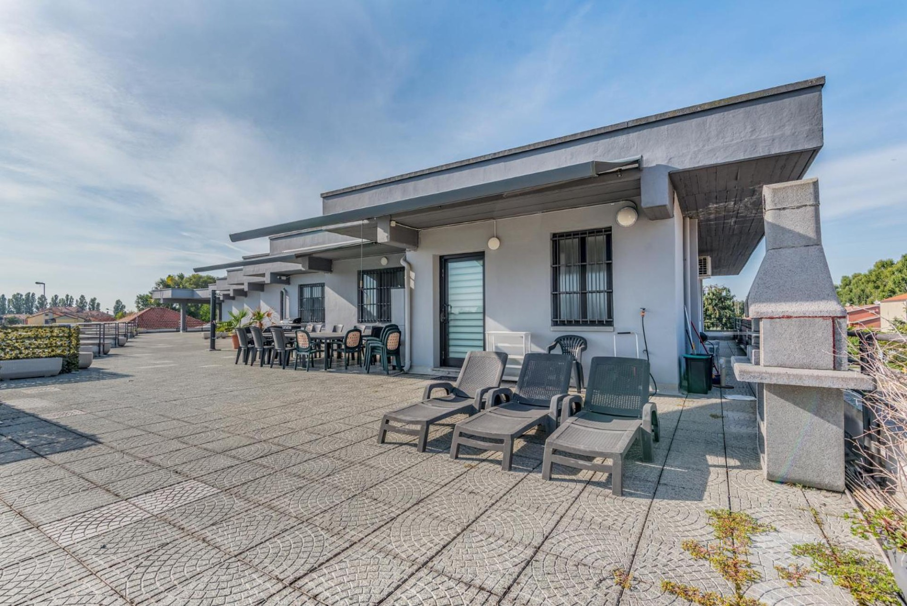

Terrace Apartments, Bareggio
Il tuo arrivo.Your arrival.
Siamo SmartLiving: gestiamo noi Terrace Apartments, le case che hai prenotato su Booking o Airbnb.We are SmartLiving: we run Terrace Apartments, the homes you booked on Booking or Airbnb.
Siamo SmartLiving, gestiamo noi Terrace Apartments. Il check-in è fatto: manca solo un tocco.We are SmartLiving, we run Terrace Apartments. Your check-in is done: just one tap left.

Ricevi le istruzioni per entrare.Get your entry instructions.
Ricevile su WhatsAppGet them on WhatsAppSi apre WhatsApp con il messaggio già scritto: premi invia e te le mandiamo lì.WhatsApp opens with the message ready: press send and we'll send them there.
Non usi WhatsApp? Le ricevi comunque il giorno prima dell'arrivo, nei messaggi della prenotazione.No WhatsApp? You'll still get them the day before arrival, in your booking messages.
Come si entraGetting in
Le istruzioni per entrare ti arrivano il giorno prima.Your entry instructions arrive the day before.
Dove sono le chiavi, il codice e il WiFi: li ricevi il giorno prima dell'arrivo, a check-in online fatto, nello stesso posto dove hai ricevuto i messaggi della prenotazione.Where the keys are, the code and the WiFi: you get them the day before you arrive, once your online check-in is done, in the same place where you received your booking messages.
Da sapereGood to know
Orari, indirizzo e parcheggioTimes, address and parking
Si entra dalleCheck-in from15:00
Si esce entro leCheck-out by10:00
- DoveWhere
- Via Monte Rosa 1, angolo Via NovaraVia Monte Rosa 1, corner of Via Novara 20008 Bareggio (MI)20008 Bareggio (MI), Italy Apri la mappaOpen the map
- ParcheggioParking
- Privato, sotto le casePrivate, below the apartments Vicino al negozio Serfa Serramenti.Next to the Serfa Serramenti store.
- In casaInside
- Asciugamani e lenzuola ci sono giàTowels and sheets are already there
- FumoSmoking
- In casa non si fumaNo smoking inside C'è la terrazza.There's the terrace.
Non chiediamo mai pagamenti né dati della carta per messaggio.We never ask for payments or card details by message.